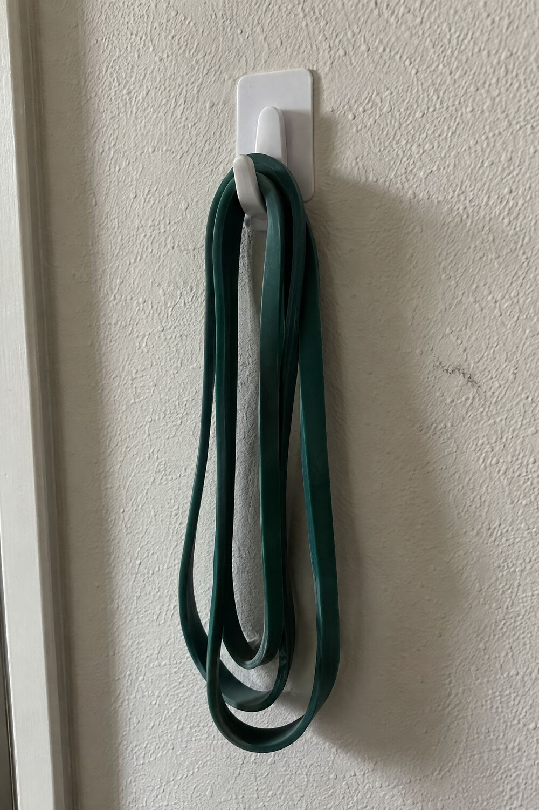
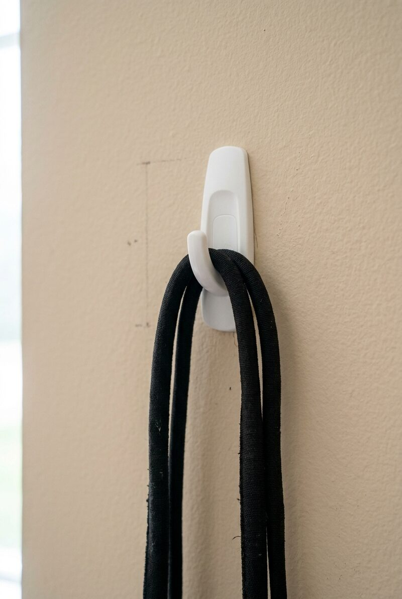
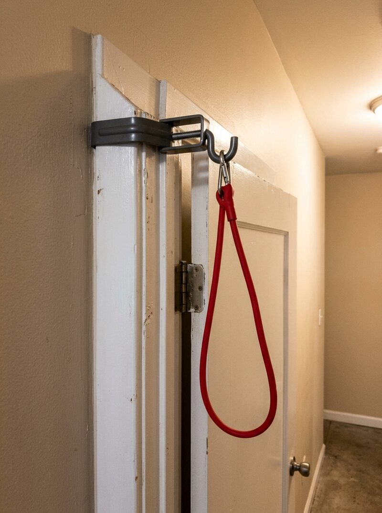
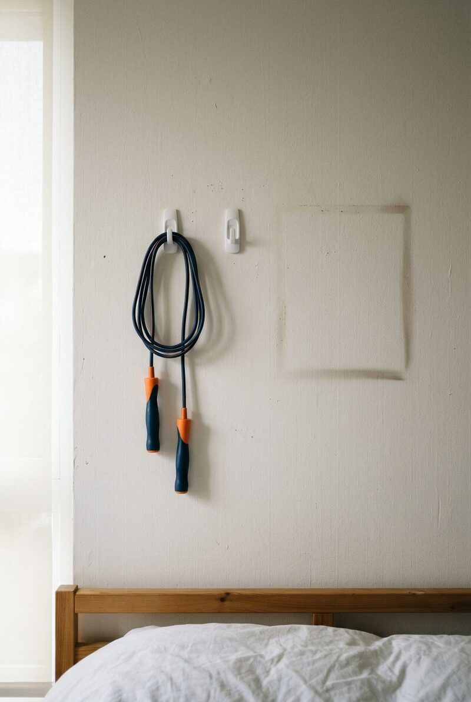
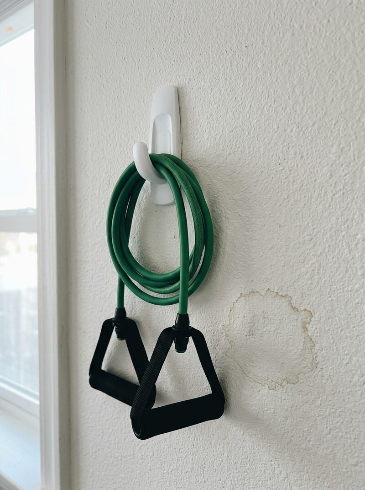
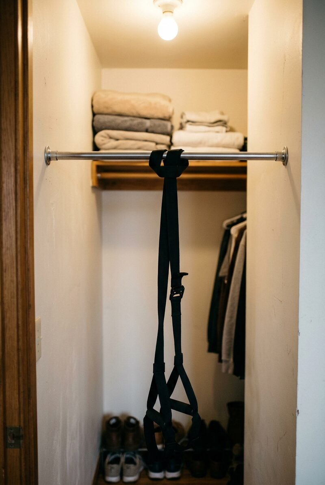
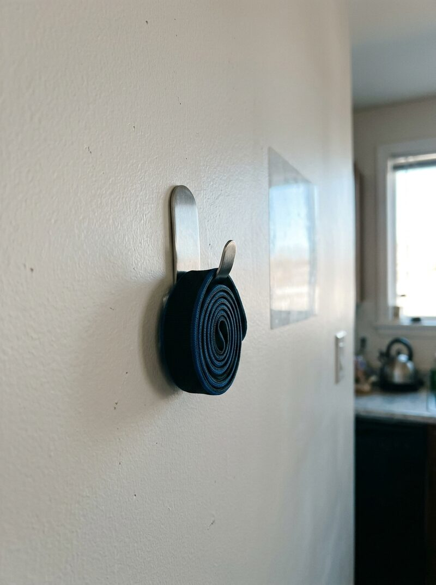
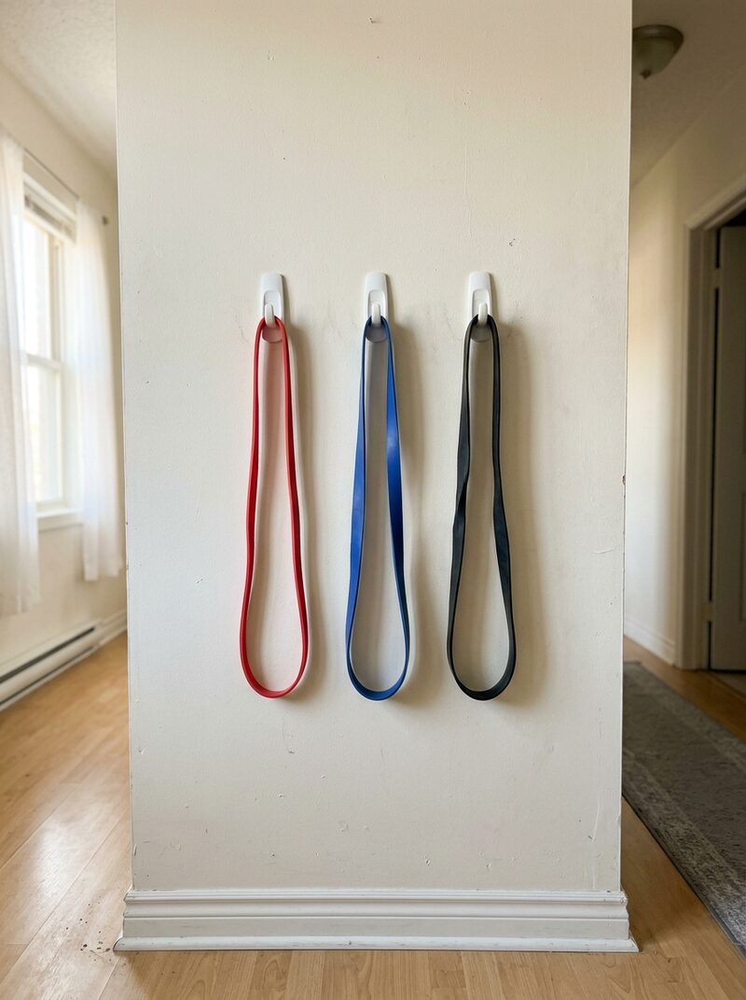
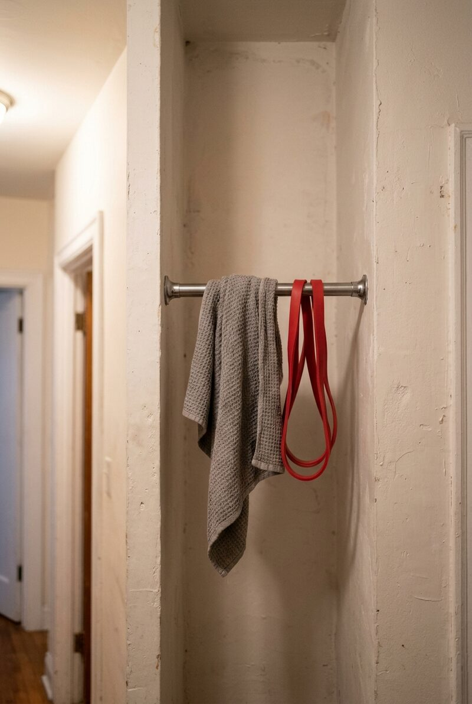
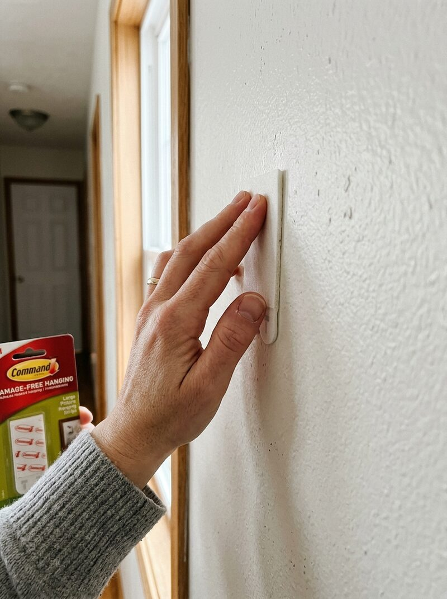

That screw-in hook feels harmless right up until move-out day, when the patched hole still shows through new paint. You don't need to risk it. Adhesive and tension-mounted alternatives hold real weight — enough for bands, light pulley systems, even a yoga strap — without ever touching the wall.

A single adhesive hook holds a full resistance band without a single hole in the wall — simple, cheap, and removable the day you move out.

A tension-mounted bracket wedges into a door frame with pressure alone, holding a band without a single screw.

Two small hooks hold a jump rope, right next to the faint outline of a picture frame that used to be there — proof this wall's already seen worse than a hook.

Standard indoor strips aren't rated for repeated pulling — the outdoor or heavy-use versions hold a full band and handle set without budging.

A suspension strap looped straight over the existing closet rod skips the need for any mount at all.

No-drill hooks work anywhere there's wall space — a hallway or kitchen-adjacent spot keeps gear out of the way without claiming a bedroom wall.

Three hooks in a row turn one stretch of hallway wall into a small band rack — each color grabbed without digging through a bin.

A tension rod wedged into a narrow nook between two walls holds real weight using pressure alone — no screws anywhere.

Press, hold, done. The whole install is faster than finding a drill bit — and just as fast to peel off later.